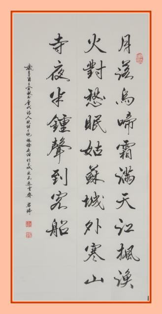
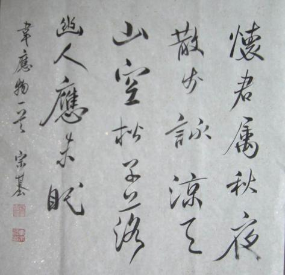

行书出现的时间大约同八分楷法差不多，而其形式也和八分楷法及以后的正书非常接近。这相当于从隶书中变出（章）草书——由“正体字”中派生出别支来。桓灵朝的“正体字”除了隶书以外，其次就是“八分楷法”，所以人们又认为行书就是“八分楷法”的别支。其实它也是同其他书体一样最初的创始还是一般的群众书写者，只要把八分书写得同其他书法流走一些而去其隶体波势，就变成行书了，在汉末一般出土的简书中我们是可以随处看到的。在汉末，行书没有普遍地应用。直至晋朝王羲之的出现，才使之盛行起来。
行书是介于楷书与草书之间的一种书体，大约出现于东汉末年。行书的名称始见于西晋卫恒《四体书势》一文：“魏初，有钟（繇）、胡（昭）二家为行书法，俱学之于刘德升。”唐代张怀瓘《书断》记载：“行书者，刘德升所作也。即正书之小伪，务从简易，相间流行，故谓之行书。”张怀瓘在其《书议》又云：“夫行书非草非真，离方遁圆，在乎季孟之间，兼真者谓之真行，带草者谓之行草。”明代丰坊在《书诀》中则有更为形象的描述：“行笔而不停，著纸而不刻，轻转重按，如水流云行，无少间断，永存乎生意也。”行书正因其行云流水、书写快捷、飘逸易识的特有艺术表现力和宽广的实用性，从产生起便受到欢迎，广泛传播。行书历经魏晋的黄金期、唐代的发展期后，在宋代达到了新的高峰，于各种书体中逐渐占居主流地位。纵观漫长的书史，篆书、隶书、楷书的发展都存在盛衰的变化，而行书则长盛不衰，始终是书法领域的显学。历代书法大家共同书写了行书发展辉煌灿烂的历史。
在浩如烟海的书法艺术宝库中，行书无疑是一座最为绚烂多姿、丰富厚重的宝藏。其中王羲之创作了被誉为“天下第一行书”的《兰亭序》，颜真卿创作了“天下第二行书”《祭侄文稿》，苏轼创作了“天下第三行书”《寒食帖》，王珣创作了《伯远帖》，王献之创作了《鸭头丸帖》等。这些照亮书法艺术星空的经典之作，是历经漫长岁月淘洗留下的艺术精髓，是中华民族对人类审美领域的独特贡献。
行书是介于楷、草间的一种书体。写得比较放纵流动，近于草书的称行草；写得比较端正平稳，近于楷书的称行楷。在书写过程中，笔毫的使转，在点画的各种形态上都表现得较为明显，这种笔毫的运动往往在点画之间，字与字之间留下了相互牵连，细若游丝的痕迹，这就是丝连。行书是楷书的快写，是楷书的流动。经过对几组楷书与行书个字的分析，发现楷书与行书书写时，点画的写法，用笔需遵循的准则，如中锋，铺毫，逆入平出，提按起主，藏锋等都是一致的，只是行书书写时比较舒展，流动。
 行书的用笔有以下几个特点：
[1]点画以露锋入纸的写法居多；
[2]以欤侧代替平整；
[3]以简省的笔画代替繁复的点画；
[4]以勾、挑、牵丝来加强点与画的呼应；
[5]以圆转代替方折。
行书代表作中最著名的是东晋书法家王羲之的《兰亭序》，前人以“龙跳天门，虎卧凤阙”形容其字雄强俊秀，赞誉为“天下第一行书”。
唐代颜真卿所书《祭侄稿》，写得劲挺奔放，古人评之为“天下第二行书”。而苏轼的《黄州寒食帖》则被称为“天下第三行书”。行楷中著名的代表作品是唐代李邕的《麓山寺碑》，畅达而腴润。
还有如宋代苏轼、黄庭坚、米芾，蔡襄，元代的赵孟頫、鲜于枢、康里巎巎，明代的祝允明、文徵明、董其昌、李待问、王铎，清代的刘墉、何绍基，近现代的于右任、启功、李志敏、沙孟海、张辛等，都擅长行书或行草，有不少作品传世。
天下三大行书，因为有诸家的称赏赞誉，世人遂将《寒食帖》与东晋王羲之《兰亭序》、唐代颜真卿《祭侄稿》合称为“天下三大行书”，或单称《寒食帖》为“天下第三行书。”还有人将“天下三大行书”作对比说：《兰亭序》是雅士超人的风格，《祭侄稿》是圣哲贤达的风格，《寒食帖》是学士才子的风格。它们先后媲美，各领风骚，可以称得上是中国书法史上行书的三块里程碑。